existence of a left derived functor for a category with enough projectives
Proposition
Let $\mathcal{A}, \mathcal{B}$ be abelian categories and $\mathcal{F}: \mathcal{A} \rightarrow \mathcal{B}$ a right exact functor. Suppose $\mathcal{A}$ admits enough projectives, then thewae exists a left derived functor $(\mathrm{LF}_i)$
Proof
Construction
object
For an object $A \in \mathcal{A}$ choose a projective resolution
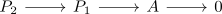
Then applying $\mathcal{F}$ -- a right exact functor -- results in an exact sequence
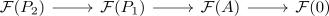
Then take the chain complex
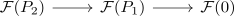
And define
through the homology functor
morphism
for a morphism
using morphism of objects and projective resolution there exists a diagram
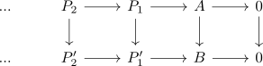
Thus applying $\mathcal{F}$ and chopping results in
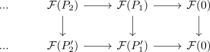
Then let
be the morphism induced by the homology functor
fundamental theorem of homological algebra
Proof
welldefined on objects
Suppose there exist different projective resolutions. Then they are chain homotopy equivalent (cf. existence of a projective resolution unique up to homotopy for a category admitting enough projectives) Applying $\mathcal{F}$ preserves the chain homotopy (cf. right exact functor preserves chain homotopies) Using chopping of a chain homotopy, they stay chain homotopic.
welldefined on morphisms
Suppose there exist two morphism of objects and projective resolution right exact functor preserves chain homotopies
functorality
delta functor
Let
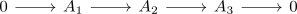
Then choose projective resolutions
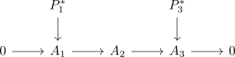
and use the Horshoe lemma to get
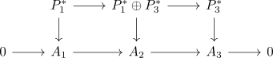
Since the sequence
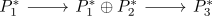
is degreewise split exact sequence, hence applying the left exact functor preserving split exact sequences it follows that
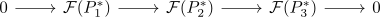
is also split exact.
Then using the fundamental theorem of short exact chain complexes there exists a boundary map
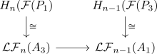
naturality
Consider
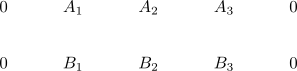
choose projctive resolutions of $f_1: A_1 \rightarrow B_1,f_3: A_3 \rightarrow B_3$ (cf. projective object in the arrow category)
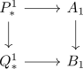
and
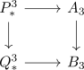
Then again by the horshoe lemma for $\mathrm{Fun}(\Delta^1, \mathcal{A})$ there exists a projective resolution
Therefore there exists a commutative diagram
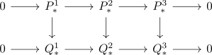
with exact rows.
This diagram commutes after applying $\mathcal{F}$ and hence $\partial_n$ preserves naturalness by the fundamental theorem of short exact chain complexes
$\mathcal{F} \cong \mathcal{LF}_0$
By definition
since $\mathcal{F}$ is right exact, it preserves cokrnels, hence
TODO
universal delta functor
Let $A \in \mathcal{A}$. Then choose an epimorphism $p: P \twoheadrightarrow A$ with $P$ projective
Since
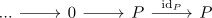
is a projective resolution, we have
for $n \geq 1$
Therefore $\mathcal{LF_n}$ is coeffacable for $n \geq 1$, as for the short exact sequence
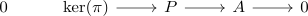
applying $\mathcal{LF}_n$ for $n \geq 1$ gives
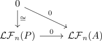
By coeffacable delta functor as universal delta functor $\{\mathcal{LF}_n\}$ is universal